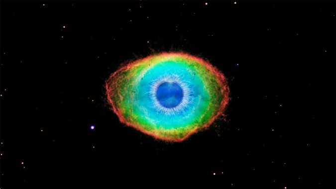
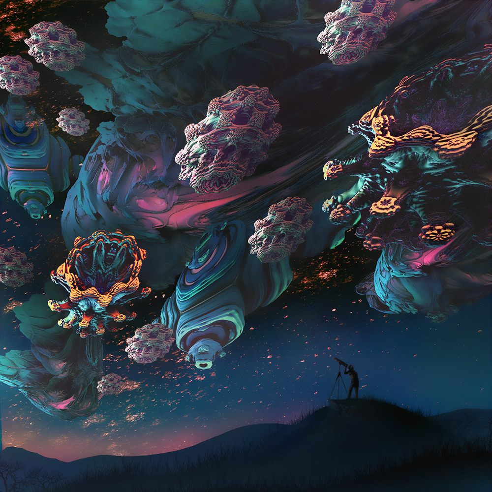

Esta é uma das páginas do exercício de navegação entre diretórios onde serão exibidas as imagens.
Veremos as duas imagens escolhidas logo abaixo:
Escolhi como primeira imagem a nebulosa Olho de Gato (cat-eye nebula)
----------------------------------------------------------------------------------------------------------------------------------------------------------------------------------------------------------
Como segunda imagem, eu escolhi uma representação artística de uma realidade fictícia onde o microuniverso é o macrouniverso:

Está é então a nossa página imagens.html para o exercício dado.